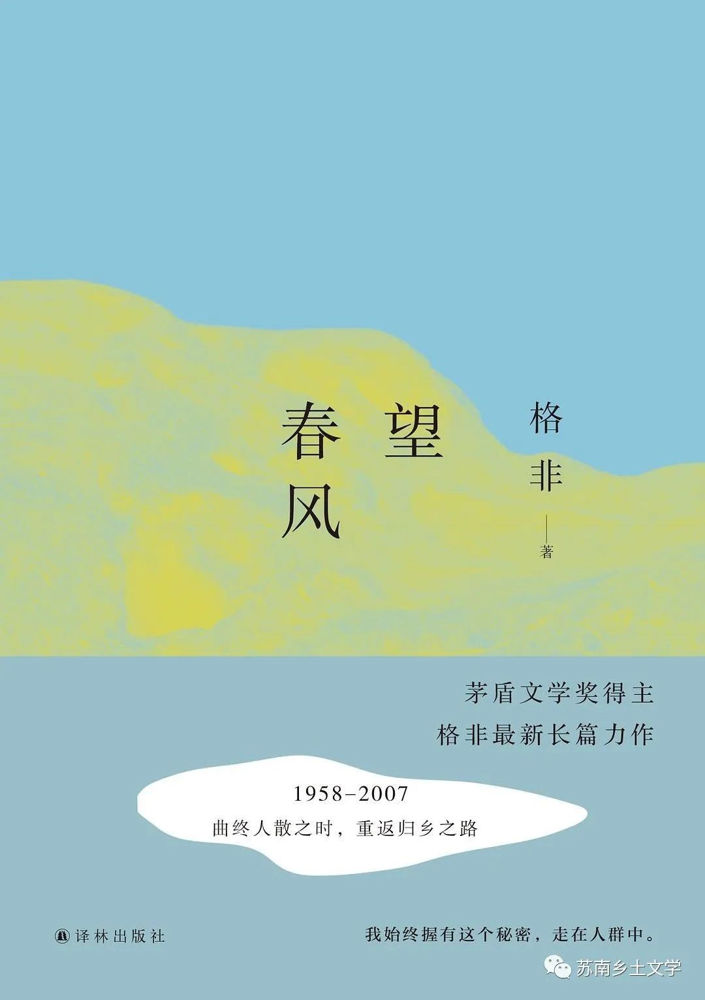

《望春风》
《望春风》是作家格非创作的长篇小说，讲述了建国前后到21世纪初的江南古村，叙述者“我”（赵伯渝）的故乡——儒里赵村在不同历史时期的状态，以及最后被毁灭的结局。小说以乡村里各种普通而又不平凡的居民的故事为切入点，刻写村庄由简朴内敛逐渐衍变的复杂过程，通过个人命运、家庭和村庄的遭际变化，描写江南乡村半个多世纪的历史运动，展现它可能的未来，并借此对逝去的故乡和老去的故人做了告别。
苏南自然风光和风俗习惯
1、苏南乡村多湖，水网密布，鹞鹰、白鹭江鸥、白鹤和苍鹭等都是栖息于沼泽水域的常见禽类。位于长江中下游地区，初夏常有洪水泛滥。
池塘边雪白的芦花丛中，有一艘倒扣的小木船。那是采菱角或夹塘泥用的小划子，尖削，破旧。船上栖息着两只白鹭，一大一小。
江鸥、白鹤和苍鹭就会从江边成群结队地飞来，密密麻麻地在竹林上空盘旋。
金鞭湾月牙形的河道围住了一个蓊蓊郁郁的小村庄。
数不清的港汊沟湾，将整个村庄分割得七零八碎。
2、常见植被：竹林、桃、李、杏树，柳树、芦苇、菖蒲、菱角等傍水而生的植物。
到了仲春，等到村里的桃树、梨树和杏树都开了花，等到大片的柳树、芦苇和菖蒲都返了青。
3、多渔村，依据长江，以捕鱼为业，所以江帆、摇橹、船工号子以及后来的汽笛、水居生活、捕鱼捕虾等描写常见。
能听见江里的摇橹声和时而低沉、时而高亢的船工号子。
可以看到江边大堤上露出的尖尖帆影。
上塘是村里人淘米洗菜、挑水做饭的地方；下塘则用来浣洗衣物，宰鸡杀鱼，处理一切不洁之物。
瞥见一段旧河道中的水潭里，突然露出了 “大草笨”黑黑的脊背，尾巴一甩，倏然不见了踪影。
4、“算命”等迷信活动仍在建国后的苏南乡村盛行，人们借算命慰现实
如果我们把走村串巷的测字者、龟卜者、阴阳先生、风水师、画符的道士都算上的话…
5、气候：较为温暖，冬天也会有雨雪，但雪一般较小
细盐似的雪粒
- 
社会现象及社会问题
1、建国后至七十年代特有的领袖崇拜苏南本土化后产生的现象。
一九七一年八月，为了纪念毛泽东畅游长江五周年，这里举办过轰动一时的游泳比赛。
2、从男女名字上以及一些封建迷行的习俗、观念可知也存在重男轻女的现象。
他认为问题出在一个名叫春琴的女孩身上：颧骨太高，泪堂太深，嘴唇太薄，腰身太细，仪态太过妖媚。
自从庙里的瘌痢和尚来家看相算命之后，他的名字被改成了文绉绉的“绍祖”，相反，姐姐春琴的名字则被改成了比较俗气的“锁娣”
3、宗法制残余，嫡长制度；乡村家族制，庭训；古时乡村人口迁徙、移民（思考古时乡村人口迁徙与今之人口迁徙的因素的不同）
在我们三个孩子中间，同彬因为是长房嫡孙的缘故，赵锡光对他多有偏爱，自是人之常情。
我们赵姓一脉，原籍山东琅琊，是世代簪缨的高门望族。“窑头赵”那一脉则要穷酸得多。他们是在靖康之乱时，跟着逃难的流民，从河南汝州落荒而来。
4、似乎是有轻视下层读书人的现象
可在背地里，大家都称他为“刀笔”。
5、缺乏高雅艺术鉴赏力，多牌九扑克等通俗娱乐活动，戏曲方面锡剧、扬剧盛行，多草台班子演出。说书内容从传统古典小说逐渐变为文革时期的手抄本小说以及一些流行小说
《水浒》、《三国演义》和《小五义》
《梅花党》《一把铜尺》《绿色尸体》以及全国各地的离奇见闻。
6、从村庄进入城市的人“成功者”形象的物质体现和行为体现（普通话取代方言）
“蝴蝶”牌缝纫机，“红灯”牌收音机，红背心上印着白色的“丹丝”字样，白背心上印着红色的“丹丝”字样。
经济
桑园、桑树，桑丝文化，桑丝经济
王曼卿拎着竹篮去村东的桑树地里摘桑叶。
工业文化影响
城市工业文化对山村的入侵，工厂周边环境污染，城市文化给乡村文化带来时髦元素（可深入农工与城市工人生活境况差异）
大批上海人的到达，一夜之间，为邗桥这个荒僻的山村增添了许多时髦的亮色——他们不仅使得邗桥有了“小上海”的名号，也在相当程度上改变了这里的风俗、生活方式乃至语言习惯。
阅读格非的《望春风》，给我的感受就是沿着主人公赵伯渝以及他所看见的儒里赵村的村民们的生命轨迹，去窥探几代人所生存的一个江南古村的沉浮。小说的独特在于使读者随着“我”的记忆，缓慢捡拾村庄里每一个渺小个体生命的碎片，投射出一个村庄走向衰亡的完整过程。主人公赵伯渝是从乡村进入城市，在从城市返乡的一个典型（虽然他得以进入城市的原因具有个体的特殊性甚至有一些戏剧色彩），他所工作的“邗桥”曾经是一个荒僻的山村，但如今已经被城市工业文明入侵，工厂林立，城市工业带来污染、脏乱，与他所想象的城市生活是截然不同的。同时，大批来自大都市的人改变了这里的生活方式。邗桥从物质面貌上到精神上都逐渐丧失了乡村的符号和记忆。而很快，他的故乡儒里赵村也遭受了同样的命运，迎来了大规模的迁移和林立的楼房，原本的生活区域成为一片废墟，人们推倒了一座村庄，又在这座村庄的废墟上建立起一座城镇，人们失去了对过去生活的记忆的寄托对象。可以说，《望春风》在反映乡村消失的原因、后果以及乡村消失后如何填补这个空白等问题上具有重要意义>。